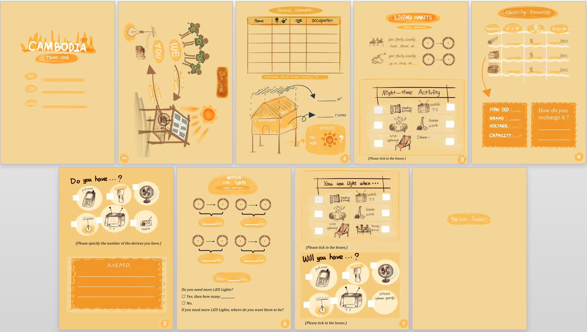
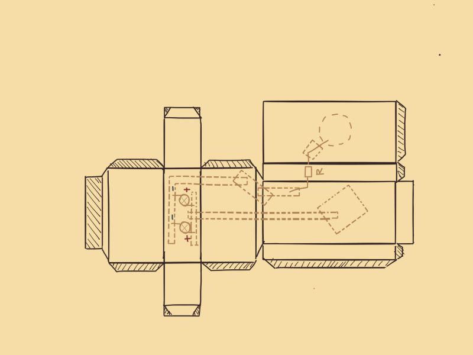
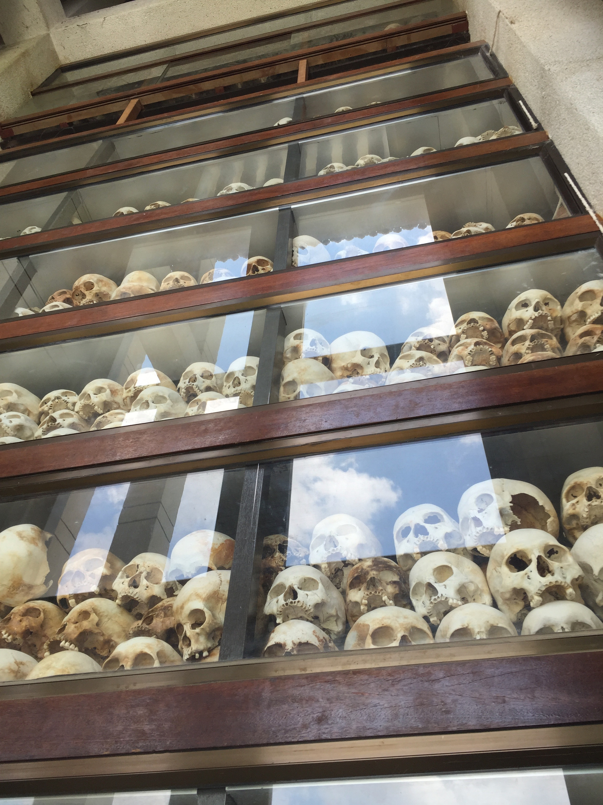
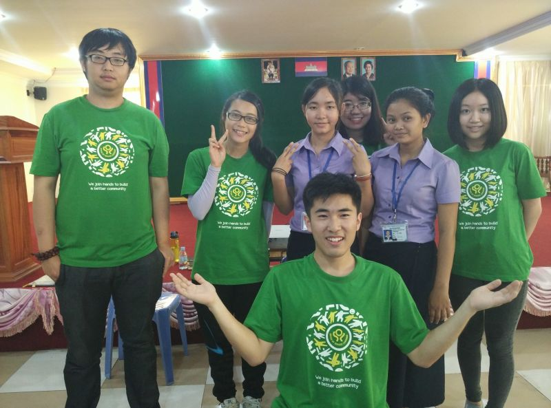
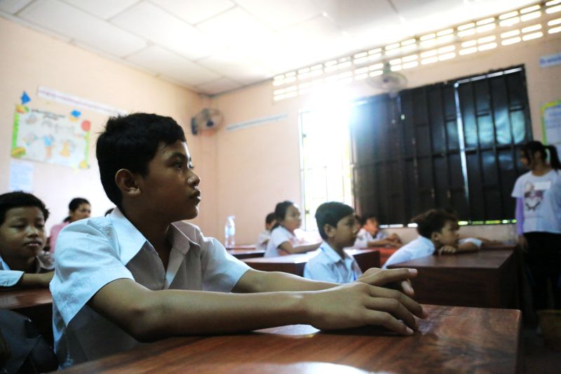
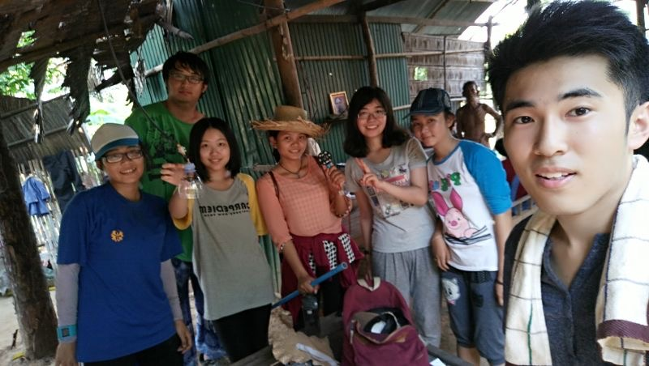

The First Volunteering Service in my life:
Service Learning at Cambodia
June 28, 2015

Service-Learning is a special mandatory subject offered by PolyU that integrates community service with academic study and reflection. COMP2S01 - Technology Beyond Borders: Service Learning across Cultural, Ethnic and Community Lines is a Service-Learning course and its Cambodia Service-Learning Project requires students to help rural families through solar energy and teach local students about science and engineering. As a member of this team, I went to Cambodia and delivered service in the Emmanuel Christian School and Silk Island from June 3 to June 14. Although we stayed in Cambodia only for 11 days, it was indeed a super unforgettable and meaningful experience in my lifetime.
Preparation
The early-stage preparation was really important, not only because it's the time to learn some useful techniques and cultural knowledge but also it would determine the qualities of future service we could distribute to the local village when we really being there. We've learned the basic knowledge about solar panels, the circuit and resistance, and how to create a solar panel for almost 1 semester. Actually, at that time I thought how to set up a solar panel was quite simple. But when I really need to build almost hundreds of solar panel at the local village in Cambodia, really being under the real environment with lots of pressure, some unexpected and frustrating challenges would always occur and it was more difficult than I thought.


In order to better realize the basic information and current living situation of local people at Cambodia and understand their needs of electricity when we arrived at there, we had to design a simple survey. Because of the language barrier, we are required to make this survey much clearer and more understandable without a mass of English. We decided to create the survey by drawing becuase painting can be easily understood without language.

Besides creating the solar panel for the local village, the other aim for this Service-Learning trip was to teach science and technology to local underprivileged students, who used to make their living on the garbage mountain. We intend to let children have fun in creating things and also learn some fundamental knowledge about science at the same time. So we designed a special DIY workshop about hand-making a flashlight whose body like a person, which could be used in their daily life. Children can easily cut down the outline of flashlight along with lines we've drawn and used glue to stick together to make a flashlight body on which children can draw the cartoon figure.


One of the important parts of pre-preparation should be the team-building. Our group was kinda special because we only got four people at first and all other groups had five or six people. Most interesting thing is that the other three team members are girls, which means I had to undertake the most of the physical tasks. I was chosen to be our group leader and it is required for me to know every team member's characteristic. I was lucky that all my team members had good communicative abilities and we can work together for one single goal. Everyone was important to me. Sunny's excellent design ability, Maple's great patience, and Riley's perfect communication skills all impressed me a lot. We had overcome many challenges together and everyone's advantages can be fully exploited. This was the first time that I knew what an awesome team should be like.

And then, we are ready to go.
Arrive
June 4, the first day in Cambodia, we visited the Tuol Sleng Genocide Museum, a former high school which was used as the notorious Security Prison 21 (S-21) by the Khmer Rouge. The buildings were enclosed in electrified barbed wire, the classrooms converted into tiny prison and torture chambers, and all windows were covered with iron bars and barbed wire to prevent escapes. People were tortured as animals at here. Prisoners were routinely beaten and tortured with electric shocks, searing hot metal instruments and hanging, as well as through the use of various other devices. Some prisoners were cut with knives or suffocated with plastic bags. When I walked through each room, to be more specifically each prison, I couldn't believe how this kind of hell can ever exist. I just felt more lucky about what I have now.

In the afternoon, we visited another historical site - Choeung Ek, which is the site of a former orchard and mass grave of victims of the Khmer Rouge. Its best-known name is The Killing Fields, where the Khmer Rouge regime executed over one million people between 1975 and 1979.

Cambodia has suffered a lot of disasters and Cambodia people shouldn't be the victims of those disasters. But history is the past, the bright new future is waiting for them, which needs all of us working together. This is the reason why we are here.
New Buddies
Because we could not speak Khmer, we need translators. HRDI is an accredited educational institution in Cambodia and some students from HRDI joined us to help translation and do the service together. On June 5, we first met our HRDI buddies. Surprisingly, 2 girls, Channin and Phally, joined my group and then we got total 5 girls in my group. Channin and Phally are super nice girls. They can speak good English and they were very helpful. We got familiar with each other very soon.

The Emmanuel Christian School
On June 6, we conducted the Flash-Light DIY workshop for the Emmanuel Christian School grade-4 students, who used to make their living on the garbage mountain. We took a long bus and the road was super muddy which indicates the school should be in rural place in the middle of nowhere.
When we first came into the school, it was large and dark. The school was built in an old former leather factory. The floor remained a large amount of rainwater from yesterday. There were no any facilities at all. There should be around 5 or 6 classrooms. The classroom cannot be simple and crude anymore. There was a small whiteboard, some moody old desks, and chairs. Boys and girls sat separately. Although there were fans and lights overhead, they seldom used them because they would use lots of electricity.

Once we went into the classroom, those students stood up immediately and spoke up together which should be the "good morning teachers" in Khmer. Those students were quite and cute. Some of them were super outgoing, especially some boys, while most of the girls didn't speak even a word and just smiled to us. We found that students have little knowledge about electricity and circuit. We played a little drama to demonstrate the basic principle of electricity and circuit. We used the vivid posters we designed before to attract students. We found that they were so much eager to learn knowledge even though the learning environment was harsh and the resources were limited. Most of the students could make the Flash-light successfully, and when some of the students finished their flash-lights, they even came to help the other. They were smart and kind and they were not bad at all. I couldn't see any difference between them and those students living in a better place. For the Emmanuel Christian School students, they just didn't get the same opportunities and resources as other students in other countries. But there should be a bright future waiting for them and I believe it would come very soon.

One detail which moved me deeply was that when a boy successfully made his Flash-light, he came to take a photo with me and hugged me. Those children were really kind and they knew it is important to be thankful. We saw their improvements in answering questions and we knew that they could apply the knowledge they learned into practice. I wish they could get inspiration from our teaching and if that's the case, it would be awesome.


Silk Island
Where we serviced was silk island in the middle of Mekong River where people almost entirely work on silk weaving. We needed to take boats to get there every day. Due to the inconvenience of transportation, there was a huge gap between the two different sides of the river. When we crossed the river at night, we found that this island was totally dark while the other side of the river had many bright lights. I realized what we did was trying to shrink this division caused by the inequalities of resources and opportunities.
From June 7 to June 10, we visited each house and did a survey to know their living situation, we talked with each villager to know their demands of electricity, we created many plans on how to set up LED lights in their houses, and we've created the charger station under the big hot sun. All of these were like smooth and simple now, though, things were not that easy. The extremely hot weather, the language barrier, the limited tools and the limited time all made this service complicated and challenging.
According to the survey, most of the houses didn't have Car Battery and LED lights. They need to spend nearly 20 dollars to buy a car battery and charge them while their salary was only 45 dollars per month. So they really need our help and we distributed the car battery to each house to make sure they have the essential electricity first. What we've done really solved their big problem and gave them a better living environment. When we visited the houses, the harsh and crude living condition really shocked each of us. The houses were built with scrap iron plates and the temperature inside the house was super high. They slept on many small wooden sticks and there were even no kitchen and toilet. I couldn't imagine how this kind of house could be someone's room.

During the installation process of charger station and LED lights, the villagers were very kind that they trust us to do everything we need in their houses. Because we didn't have many boys in our group, many villagers also help us to build the charger station. All indicated that we built such kind of mutual trust between us and the local people, which was also the motivation to make changes happened together. After we installed all the LED lights and built the charging stations, we made sure that local villagers could learn how to recharge their car battery and how to protect and maintain them. When they paying attention to the guide and our explanation, I could felt that the car battery was their precious hope and even the whole life. It showed that what we've done could have great impacts on their daily lives.


When our group installed LED lights for one house on June 12, there was a young baby slept in the hammock and there were so many kids around us. The house owner, a young mother, asked us to install a LED light over the table so that their kids could study on the table at night. Those words deeply touched me and I realized that they knew the importance of education and they rely on education so much to change their lives. At the end, the young mother gave us snacks and fruits to express her gratitude and took a photo with us. Even though we cannot use the same language to communicate with her, we could still feel their hopes. Especially when we saw the children, we understood what we could do was little for us but the significance for them could not be count.

From this service, I've found my physical and mental limitations and I've become more resistant and patient under some extreme situation. I still remembered the night on June 9, when we were building the solar panels, and connecting the controller and water pipes with solar panels together, how despairing and frustrated I felt. Because the iron wires we fastened were not holding strongly and some nails were not tight enough, we decided to start over again. I was the only one boy in my group so I undertook most of the hard parts. But after whole day working under the high temperature, I gradually felt that I used up my energy and patience and reached my physical and mental limitations. Especially when I saw all other groups have gone but left us, I felt totally exhausted and discouraged. I thought I could stay selfless and optimistic no matter what happened, but at that moment it was the first time that I realized I still have limitations over which I cannot cross. But I still got my teammates supporting myself and we encouraged each other to never give up. I spoke to myself like "I gotta do it, I gotta finish it" and I pushed my limitations again and again. I appreciated so much that my anti-pressure ability was improved because of that night, and now I know how to keep calm and patient when the situation is really tough.

In the end, we've distributed the car battery to 120 houses, we've installed the LED lights for totally 30 houses and we've created the charger station for 6 communities.
The End
This trip to Cambodia was my first time to go abroad and do volunteering service. It indeed broadened my horizon and developed my global outlook. When I arrived at Phnom Penh, I found that Cambodia was much more undeveloped than I used to think. Cambodian people have suffered a long miserable time and there are still many social issues such as prostitution and corruption. At that point, I realized that this world is so big that there are various histories and different living conditions among the world. Even for the most basic electricity, not everyone can use it. It drove me to think that we had such abundant educational resources and great living condition so that we have to save what we have and stop wasting.